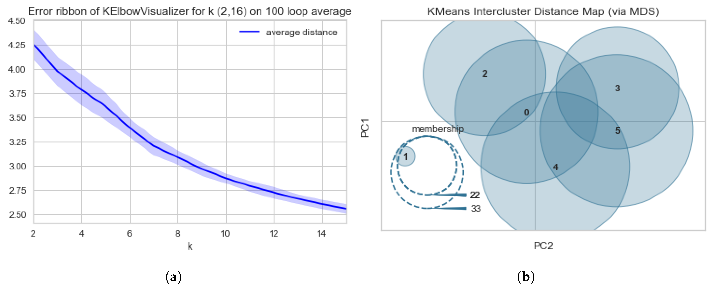

Authors: Jasmine DeHart, Corey Baker, Christan Grant
The Sixteenth International Conference on Wireless and Mobile Communications (ICWMC). pg 30-33. Porto, Portugal. 2020.
The expectation of people and futurists is that all respectable cities will become Smart Cities in the near future.
In this paper, we describe how citizens, city planners, and companies can develop smart cities that do not require crippling loans and
are respectful of privacy.
Authors: Jasmine DeHart, Makya Stell, Christan Grant
Information (MDPI). Special Issue: End of Privacy? 11(2), 57. 2020.
Online privacy has become immensely important with the growth of technology and the expansion of communication.
Social Media Networks have risen to the forefront of current communication trends.
With the current trends in social media, the question now becomes how can we actively protect ourselves on these platforms?
In this study, we investigate (1) the users’ perspective of privacy, (2) pervasiveness of privacy leaks on Twitter,
and (3) the threats and dangers on these platforms.

Authors: Jasmine DeHart, Christan Grant
The 39th IEEE Symposium on Security and Privacy (S&P). San Francisco, California. 2018.
With the growth and accessibility of mobile devices and internet, the ease of posting and
sharing content on social media networks (SMNs) has increased exponentially.
Many users post images that contain “privacy leaks” regarding themselves or someone else.
In this work, we investigate (1) how pervasive social media-based privacy visual content
leaks are and (2) what reasonable mitigation strategies can be developed to detect and minimize these leaks.